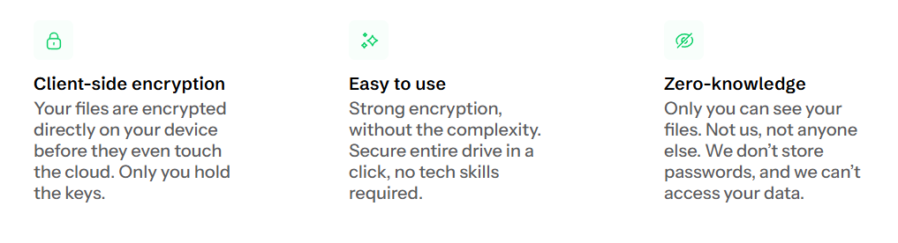
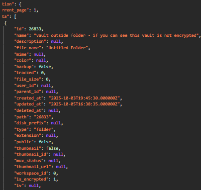
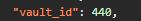
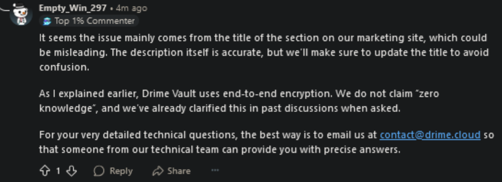

Original Report: October 2025 | Updated: November 2025
This document examines the encryption claims made by Drime Cloud regarding their "Vault" feature. Through API analysis, I found significant discrepancies between their marketing statements and the actual implementation.
Drime Cloud advertises their Vault as having "zero-knowledge" and "end-to-end encryption," stating that "Only you can see your files. Not us, not anyone else." However, API responses show that all file and folder metadata is transmitted in plaintext to their servers.
Drime Cloud is a file storage service based in the European Union. Their Vault feature is marketed as a secure, encrypted storage solution for sensitive files. The service claims to implement zero-knowledge encryption, which typically means that the service provider cannot access any user data, including metadata.
The following statements appear on Drime's official website at drime.cloud/vault:
"Drime end-to-end encrypted (E2EE) Vault provide the most secure way to store your most sensitive files in the cloud."
"Zero-knowledge: Only you can see your files. Not us, not anyone else. We don't store passwords, and we can't access your data."
"Your files are encrypted on your device and never leave it unprotected. Only you can access them, not even Drime."
Figure 1: Drime's "Zero-knowledge" marketing claim (Source: drime.cloud/vault)
When accessing the Vault feature, the client makes an API request to:
https://app.drime.cloud/api/v1/vault/file-entries
The response contains the following data structure:
{
"id": 26833,
"name": "My Confidential Tax Documents",
"description": null,
"file_name": "2024_tax_return.pdf",
"mime": "application/pdf",
"file_size": 2547891,
"type": "folder",
"extension": "pdf",
"created_at": "2025-10-03T19:45:30.000000Z",
"updated_at": "2025-10-05T16:38:35.000000Z",
"path": "26833",
"vault_id": 440,
"is_encrypted": 1
}
The API response reveals the following information in plaintext:
The response includes an "is_encrypted" flag set to 1, which appears to indicate that file contents are encrypted, but not the metadata.
Figure 2: API response showing unencrypted metadata in browser DevTools
True zero-knowledge encryption implementations encrypt metadata on the client side before transmission. For comparison, pCloud's Crypto Folder service returns encrypted filenames:
{
"name": "CM4LSAOHWDTXNPEJF2XZA67KOPDJ5XOJWACR3JVTT4KK3DRQBAE5RHIY4Z4IUKSDO4AM4ZODDSH7S",
"encrypted": true,
"contenttype": "application/octet-stream"
}
Other services implementing true zero-knowledge encryption include:
Figure 3: pCloud Crypto folder showing encrypted filename vs Drime's plaintext
The exposure of metadata has significant privacy implications:
| Information Type | Visible to Drime | Privacy Risk |
|---|---|---|
| File names | Yes | Reveals document subject matter |
| Folder structure | Yes | Shows organization and categories |
| File types | Yes | Indicates content nature (medical, financial, etc.) |
| Access times | Yes | Behavioral patterns and frequency |
| File sizes | Yes | Can infer content complexity |
This metadata can be:
The vault_id field uses sequential integers (440, 441, 442, etc.). This implementation allows any user to determine the total number of vaults created system-wide by creating and deleting vaults and observing the increment. This is a minor information disclosure that violates common security practices. Standard implementations use UUIDs or random identifiers to prevent enumeration.
Figure 4: Sequential vault_id allowing enumeration of total vaults
The findings can be verified using the following process:
All metadata will be visible in plaintext in the response.
When these findings were initially reported, Drime's team responded with the following statement:
"Drime Vault is a new feature, and we've already addressed these concerns. The file content is fully end-to-end encrypted, it's encrypted on your device before being uploaded. Some providers use the term 'zero knowledge,' which usually means that even metadata is encrypted. We plan to bring this level as well once Vault is fully stable."
In a subsequent response, they stated:
"We do not claim 'zero knowledge', and we've already clarified this in past discussions when asked."
This statement contradicts their marketing page, which explicitly includes a section titled "Zero-knowledge" with claims about data access.
Figure 5: Drime's response claiming they "do not claim 'zero knowledge'"
Drime Cloud operates in the European Union and markets services to EU citizens. The discrepancy between marketing claims and actual implementation may raise concerns under several regulatory frameworks:
The use of terms like "zero-knowledge" and statements such as "Not us, not anyone else" while maintaining server-side visibility of metadata could be considered misleading to consumers making security decisions.
For Drime Cloud:
For users considering Drime Vault:
Drime Vault appears to implement encryption-at-rest for file contents, which provides some level of protection. However, the implementation does not meet the industry standard definition of "zero-knowledge" encryption, which requires that metadata also be encrypted client-side before transmission.
Following the initial report, further API analysis has identified that Drime Cloud appears to be running a white-labeled version of BeDrive, a generic PHP file-sharing script available on CodeCanyon for approximately $29. The API endpoints and backend structure match BeDrive's architecture by approximately 95-98%.
The file identifiers used by Drime are not cryptographically secure hashes. The API returns a "hash" field that, when analyzed, reveals simple obfuscation rather than encryption.
API Response:
"hash": "MzQ0NDZ8cGFkZA"
Decoded (Base64):
34446|padd
This matches the exact PHP source code found in the BeDrive script, which manually pads the ID with the word "padding":
public function getHashAttribute(): string {
return trim(base64_encode(str_pad($this->getRawOriginal('id').'|', 10, 'padding')), '=');
}
This proves that the "secure hash" is merely the sequential database ID encoded in Base64. It is reversible and allows for enumeration of files.
The API response for "encrypted" Vault files includes an Initialization Vector (IV) stored directly in the database row:
{
"is_encrypted": 1,
"iv": "TM49hT8aKz73V8iP"
}
In a true client-side Zero-Knowledge architecture, the server should receive a single encrypted blob and should not be managing the IV separately. The presence of this field indicates that Drime is using standard Server-Side Encryption (likely via the Laravel PHP framework). This implies that Drime holds the encryption keys on their server and can technically decrypt user files at will.
When accessing the Vault, the API returns a password verification hash to the client:
"check": "VqpUxQg3x4kJB2aKekAR6KQi15X476qvp1dtMQ=="
This suggests that the "Vault" protection is a UI-based restriction. The server verifies the password hash and then grants access. Since the server holds the encryption keys (as proven by point #2), a rogue admin can bypass this password check entirely to access the files.
By analyzing the sequential database IDs exposed by the BeDrive architecture, we can estimate the actual size of the platform versus the implied size.
| Metric | Observed ID | Interpretation |
|---|---|---|
| Vault Files | ~34,446 | The total number of files ever uploaded to the Vault system-wide is only ~34k. This indicates extremely low usage. |
| Regular Files | ~482,280,015 | This number appears artificially inflated. Given the user ID count (~19k), this would imply 25,000 files per user, which is statistically improbable. |
Actual number of files ever uploaded is probably somewhere around ~2,280,015(without vault).
It appears the database auto-increment counter was manually set to a high number for regular files to create the appearance of scale, but the admins neglected to inflate the Vault file counter.
Drime is not a trustable or honest company. The Drime founder constantly twists and switches their definitions of E2EE to suit the situation. Their narrative regarding "Zero Knowledge" has shifted repeatedly when challenged:
Beyond these verbal inconsistencies, the technical architecture proves the deception. Drime is running a white-labeled instance of a $29 generic script (BeDrive). Because the server stores the salt, the password verification hash, and the per-file IVs, the system is fundamentally not End-to-End Encrypted.
Using Drime is like using Google Drive or Dropbox. The service provider holds the keys to your data and can access it at any time (e.g., internal snooping). The critical difference is that Google and Dropbox do not falsely advertise themselves as "Zero-Knowledge" privacy vaults, nor do they run on generic template scripts with artificial statistics.
If the server can validate that a password is correct (via the "check" hash) and holds the encryption IVs, the server possesses the ability to derive the keys and decrypt the files. This is standard Encryption-at-Rest masquerading as a military-grade privacy vault.
Verdict: Drime is not E2EE and users seeking genuine privacy or protection from server-side data breaches should avoid Drime Cloud entirely.
This analysis was conducted in October and updated November 2025. All evidence has been archived and is available for verification.
Contact: sylphie@tuta.io